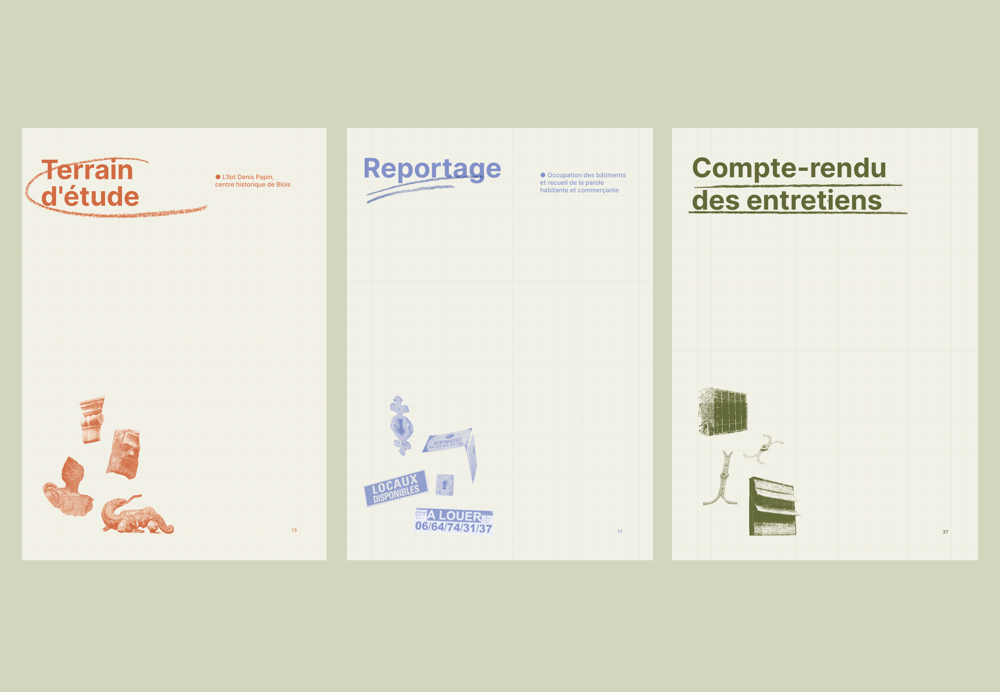
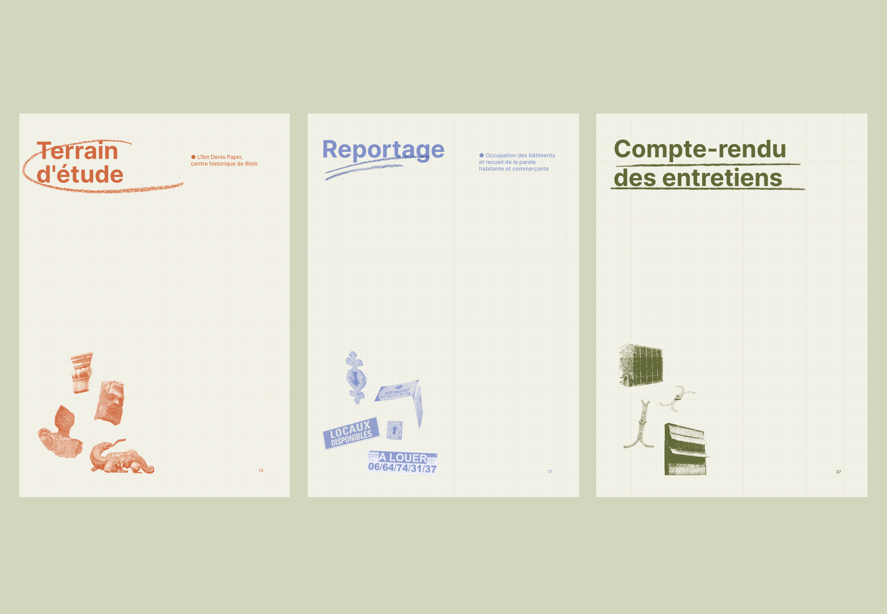
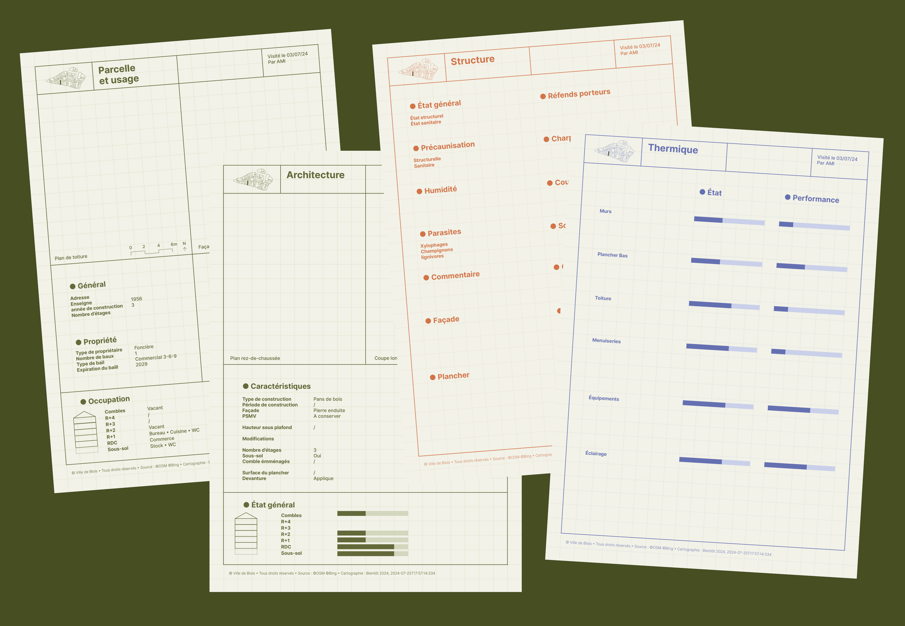
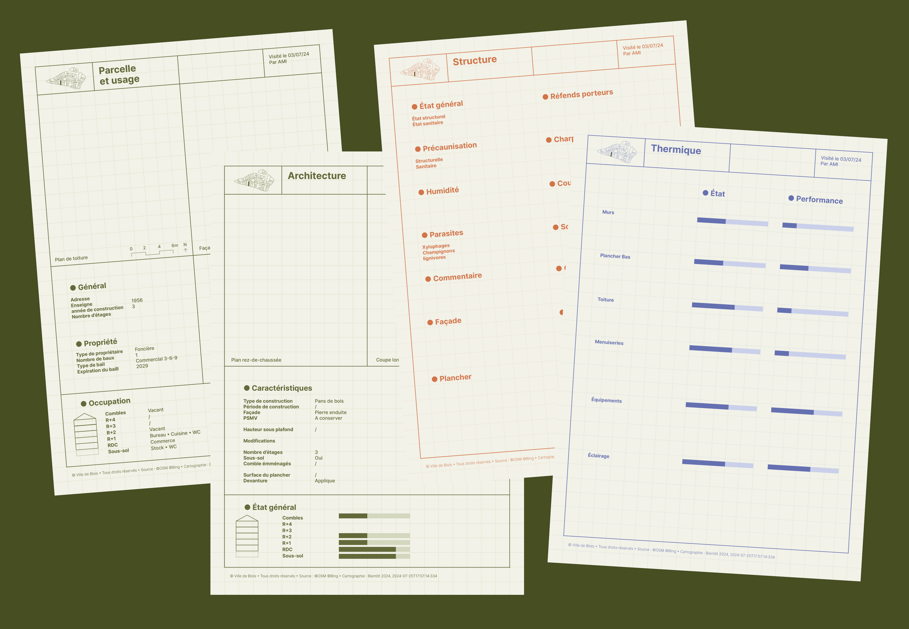
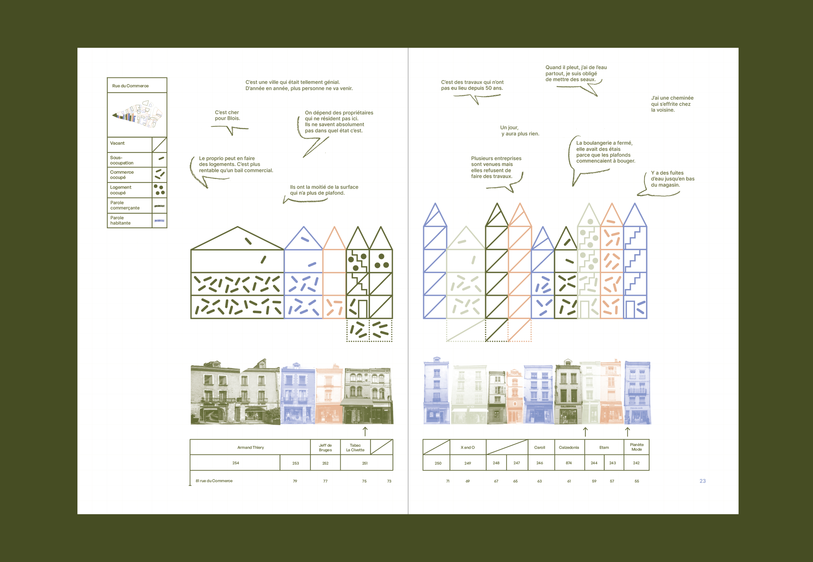
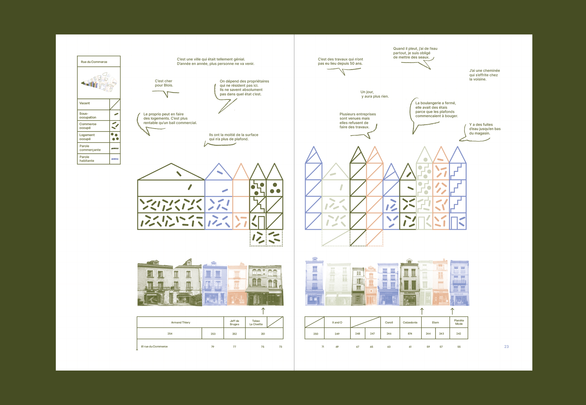

Station Papin
Identité graphique du projet de reconquête de l'îlot Denis Papin à Blois, avec les agences d'architecture et d'urbanisme Tout Terrain et Bientôt. Un projet porté par la Ville de Blois et Agglopolys.
Conception de la charte graphique et de la boîte à outils constituée de différents éléments visuels pour permettre aux équipes d'être autonome dans la rélisation de leurs différents supports : diagnostic, présentations, calendrier, fiches immeubles, etc.
Réalisation des différents supports de communication et de médiation : cartographies, invitation à un atelier collaboratif, supports graphique de l'atelier.
Mise en page des carnets d'investigation qui présentent graphiquement les différentes immersions mensuelles à Blois.
Conception de la scénographie de l'exposition de la Station Papin, lieu antenne de la démarche de reconquête de l'îlot Denis Papin, qui restranscrit le diagnostic des architectes et bureaux d'études.
Démarche en cours de juin 2024 à septembre 2025.


 

 



 
